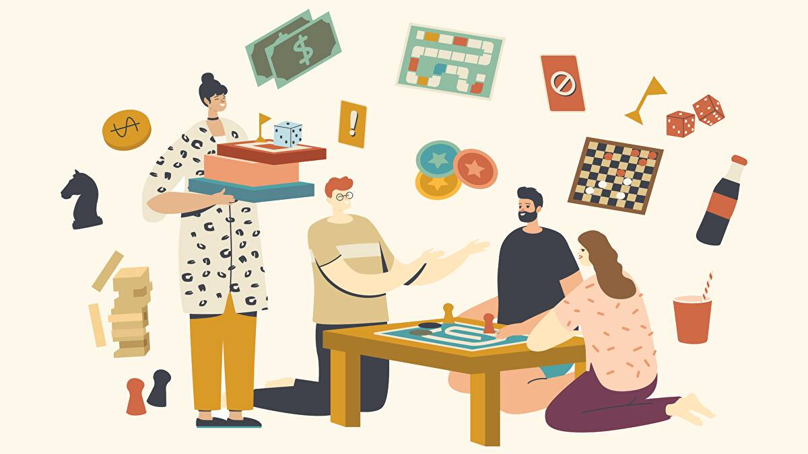

Board Games Night
So you want to host a board games night? You've come to the right place!
This website will introduce you to 3 games from three different types of game genres: quick and easy, deduction and cooperative games. Before we get started, we need to cover some guidelines in order for you to have a fun and memorable game night!
Invite the right number of people to play:
Most games have a minimum of 2 players up to a maximum of 5 players. This is not your usual house party meaning that inviting more than 10 people will have many people waiting their turn to play games which is not ideal.Make your guests comfortable:
Ideally, you should play your games on a stable table. The table should be large enough to place all components of the game. Lastly, provide food and drinks before you start the game. This way, your board games won't have food or drink stains on them.Ideally learn the rules prior to starting a game:
Making yourself familiar with the rules of the game means you can have more time playing and less time learning the rules during your game night.Choose the right games for your group:
This website will suggest some fun party games you can play with your group! Choosing the right games can make or break your board game night. For example, for beginners to board games, I would not suggest to play a 2hr game with complex mechanics.Remember to have fun and enjoy!

Let's get started! To see the games suggested for a board games night, navigate through the links of the navigation bar or click on the link below to go back to the top.